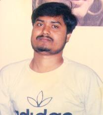

WEEKEND THOUGHTS # 37

Hi, Everyone: It is a chilly evening now in the twin cities. With the Holidays around the corner and a spirit very high, I am trying to finish this introduction so that I can get back to my family and the warmth of my apartment to settle down for the holidays ahead. However, I want to bring this issue of Weekend Thoughts to all of you before I leave.
Christmas is a season of hope and happiness. However, some of us including the author of this weekend's article miss the environment of a family. Far away from home and family, in a exotic environment, all they have is their thoughts to hang on to. Unlike, those who are married and have a family, they can look forward to a cosy holiday with lot of sharing and caring. However, ORNET has been the only media which has brought this family together. For those of you who are single, please treat this as a family and share your thoughts and feelings. May the season be a blessed one for you.
The author of this weekend's article is a young software consultant from Jaykaypur, Orissa who has discussed a very intangible issue, i.e. Happiness. Author's in the past, viz. Umakanta Choudhury had a very interesting article on Happiness. This seson has been nostalgic in the sense that people have tried to pour their inner feelings through their articles about Mother, Memory, Family and whatever they miss most their life before they came to USA.
The article is a very interesting one and I am sure you all will enjoy it. The reviewers come up with yet interesting thoughts in the line of the author's article.
Wish you all a Merry Christmas.
Regards,
Debasmita Misra (12/22/95)
(misra@maroon.tc.umn.edu)
Oriya Homepage: http://www.cs.columbia.edu/~deba
Name: Arun Patnaik
E-mail: arupat@sybase.com
I am a software consultant, currently working with Sybase Inc. at Emeryville, California. I arrived in US recently on the 24th of August 1995, which well accounts for the nostalgia.
I have spend my childhood and the teen-years in an industrial estate of Orissa, named JayKayPur, after the Singhania brothers Jogilal and Kamlapat. The JK Paper industries is located here. I have inherited my interest in poetry from my father. My love for mathematics comes from my mother, who was my first teacher.
I studied at the Laxmipat Singhania High School till my 10th. grade. Our's was the first batch of 10+2 students in Orissa (The so called experimental batch). After that I did my +2 Science from Rayagada College, Rayagada. Actually I continued an year onto +3 science with Physics honours and was doing great when I moved to IIT KGP.
I went on to do MS in Maths from IIT Kharagpur (86-91) and quite unexpectedly started my career as a software engineer with CMC Ltd. Calcutta, where I worked till Aug-95.
Like all pisceans I am a dreamer and am always trying to understand new ideas & stories. I like to make a lot of friends.
My hobbies include movies, reading and solving riddles.
Ofcourse I am happy!
Prelude:
The following few lines were written on a chilly-lonely-weekend, in a moment of nostalgia, when momoires of the warmth of home and company of the loved ones hurts most. Thus the conditions might have a bias on the writing.
Ofcourse, I am happy
I think the question most often asked by parents/elders when one settles in US, (assuming parents are back home) is Are you happy?, because that's all that matters. And the common response is Ofcourse, I am happy. In most cases these words are expressed without any thought at that point, but I guess most people would think about it on the first available chance for a journey down the memory lane. I would not dare to answer the question for them, but when I think of it what puzzles me most is the word happiness.
Happiness is a relative concept as all feelings, at the same time it has some common symptoms. Some people are happy with the money they have saved and with the thought of all they can do if and when they go back to India, only that they won't. Some people are happy with the standard of living, they forget the cultural heritage they have lost. Some people are happy with the work, they forget there is so much more to life. Some people are happy to see their own children getting a good education, but really is that so?
Also, some people are chronically unhappy. And sometimes when someone says I am happy what (s)he means is things would be worse if I come back or I can't really come back. This can happen once the roots of the family grows here. Now you have some roots back home and some here and well you probably decide to cut the old roots. Anyway there could be so many situations.
And most important of all most people wonder would they have been happier if they were back home(!) [ or if they go back ]. May be, May be NOT! Well everyone has to find their answer for themselves.
I for one am still wondering.
Epilogue:
I feel chances of being happy after going back depends on so many factors, that only the very strong minded can achieve it. Theoretically, happiness can be achieved in any place, and it is nothing but a state of mind, the environment is nothing but a catalyst. I wish you all the best on your search for happiness.
Yesterday and Today
Wasn't it yesterday, that i left home,
and came in search of greener pastures
and probably found them
or else why am i still here
wasn't it yesterday, that i told my mom,
i will be back in two years
and i did for a month or so
but i came back here
wasn't it yesterday, that i thought
this is just right for me
and i will make a difference
and stayed on here
wasn't it yesterday, that i realised
i couldn't go back with my family
and rob them of all i wanted
in my youth, here
and today, i am still thinking.
what i have gained
and what i have lost
by being here.
A nice piece of article with an excellent poetic touch. Beneath this chilly-lonely-weekend, nostalgic moments of thought lies a hard fact of life - HAPPINESS. A term which has no definition (at least for me). Are we talking about something absolute or is it relative. Does it return a value integer or a float or even a char * ? Is it a cause or an effect? Is it a state of mind or BODY MIND and SOUL. The answers can be many. For people like Budha it may be absolute - NIRVANA. For people like us Is it - still searching - still searching (we have long lasting Energizer battery).
Life is an equation of give and take. Remember those lines from a song of a film SHOR "kuch pa kar khona he kuch kho kar pana he, jevan ka matlab he ....". It's only we , who decide what we want to get and what we want to loose.
So I have a small equation:
SUM ( All the things in Life) = CONSTANT
This CONSTANT does not vary much, between any two individuals. (Only a self observation, not from any market-research data)
I think Satisfaction and Happiness are two different aspect of life. I may not be satisfied with the quality of life or with the amount of money I am making, but why should it stop me from being HAPPY in my life. We can never be satisfied in our life (increase one param the other param is automatically decreased), but we CAN be HAPPY in our life, if we want to.
Any way Merry Christmas and HAPPY Holidays
The author is not clear on the theme of the article, is it being happy in life or returning back to India. At the same time, the author has rightly pointed out that 'happiness' is a relative term. Invariably, many of us feel the way the author does when asked if we are happy. Happiness in a person depends on how objective the person is and if he/she realizes what makes him/her happy. Then follows emotions, reality and a number of factors. In my opinion, the realization factor plays a major role in a person's happiness.
Click here for some AFTER THOUGHTS received through personal communication
Your comments are always welcome...

 Arun Patnaik
Arun Patnaik

Ride back to Home Page...
![[IMAGE]](../../wt/rath.gif)